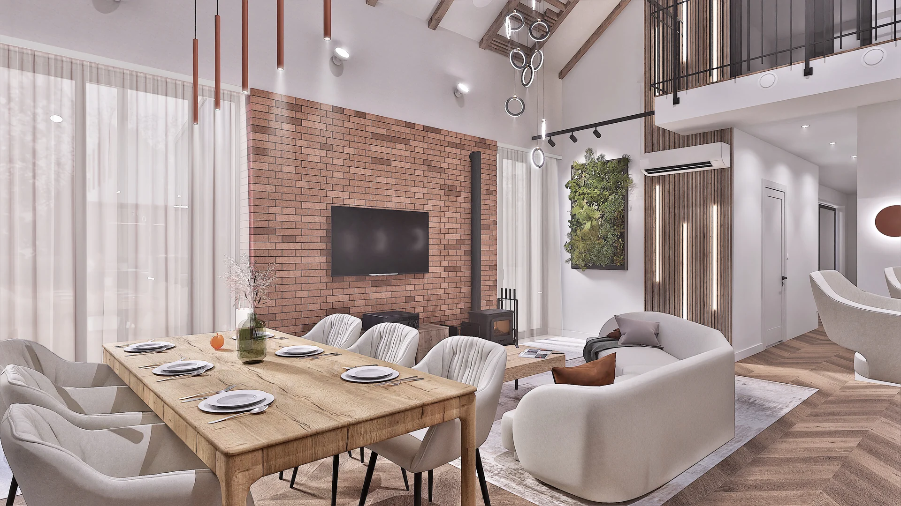

Projekt koncepcyjny

To Oni Projektują / Gliwice
Projektujemy
wnętrza, które
działają.
Czekamy na zdjęcie
O nas
To Oni Projektują
Najpierw poznajemy człowieka, później projektujemy wnętrze.
Jesteśmy To Oni Projektują - pracownią architektury wnętrz z siedzibą w Gliwicach, założoną przez Oliwię Brust i Jakuba Koprianiuka, absolwentów kierunku Architektura Wnętrz na Politechnice Śląskiej.
Projektujemy wnętrza, które odpowiadają na potrzeby ich użytkowników. Łączą estetykę z funkcjonalnością i ponadczasowymi rozwiązaniami. Wierzymy, że każda realizacja powinna być indywidualną odpowiedzią na styl życia, oczekiwania i charakter osób, dla których powstaje. Nie opieramy się na gotowych schematach. Analizujemy potrzeby i tworzymy przestrzenie dopasowane do konkretnych ludzi.
Nasze projekty wyróżniają się dbałością o detale, przemyślanymi rozwiązaniami oraz możliwością sprawnej realizacji. Na każdym etapie współpracujemy z wykonawcami oraz specjalistami z poszczególnych dziedzin, dzięki czemu dokumentacja jest praktyczna, a proces realizacji przebiega sprawnie i bez zbędnych komplikacji.
Realizujemy projekty wnętrz na terenie całej Polski. W zależności od potrzeb i oczekiwań współpracujemy stacjonarnie, zdalnie lub w formule hybrydowej, zapewniając taki sam poziom zaangażowania i indywidualnego podejścia niezależnie od lokalizacji Inwestycji.
Realizacje
Nasze projekty
Oferta
Pakiety
projektowe
Wybierz pakiet dostosowany do Twoich potrzeb.
IPakiet IKonsultacja projektowa
Usługa pomaga w wyborze lokalu bądź rozwiązań planowanych na Inwestycji.
Rozwiń zakres +
Pakiet obejmuje:
- Analizę lokalu
- Analizę planów Inwestycyjnych
- Zalecenia i wskazówki projektowe
Usługa konsultacji projektowej pomaga w wyborze lokalu bądź rozwiązań projektowych planowanych na Inwestycji. Są to spotkania, na których analizujemy zalety, wady i możliwości, tak aby przyszła Inwestycja jak najlepiej odzwierciedlała oczekiwania klienta.
IIPakiet IIBasic - Funkcja
Początek projektu wnętrz każdej Inwestycji - funkcja, ergonomia i wygoda.
Rozwiń zakres +
Pakiet obejmuje:
- Rzut układu funkcjonalnego
- Rzut analizy rozwiązań projektowych
- Konsultacje online
- 2 korekty układu według wytycznych
Podstawowy pakiet, który jest początkiem projektu wnętrz każdej Inwestycji. Są to rzuty lokalu w oparciu o potrzeby i wytyczne Inwestora, przedstawione w formacie schematu mieszkania i poglądowego rozmieszczenia elementów wyposażenia, bazując na standardowych wymiarach obiektów. Etap skupia się bezpośrednio na prawidłowym funkcjonowaniu wnętrza i ergonomii, tak aby wnętrza były maksymalnie wygodne i praktyczne w użytkowaniu.
IIIPakiet IIIStandard - Forma
Najbardziej popularna opcja - funkcja, materiały i część wizualna.
Rozwiń zakres +
Pakiet obejmuje:
- Elementy pakietu Basic
- Dobór materiałów wykończeniowych
- Rozwiązania estetyczno-projektowe prezentowane na modelu 3D
- Wizualizacje 3D
- Zestawienie materiałów z linkami do produktów
- Konsultacje online
- Wsparcie Architekta podczas wykonawstwa
- 2 korekty według wytycznych
Najbardziej popularna opcja, która jest poszerzeniem pakietu Basic o część wizualną projektu wnętrz. Zakres prac obejmuje przygotowanie spójnej aranżacji wnętrz, w tym dobór konkretnych materiałów dostępnych w lokalnych salonach. Elementy estetyczne oparte są o wytyczne klienta, które omawiane są szczegółowo podczas konsultacji. Wszystkie założenia omawiane są podczas spotkań, na których przedstawiany jest model 3D wraz z konkretnymi produktami. Pozyskiwane są również próbki i wzorniki materiałów, aby nasi Inwestorzy mieli możliwość zapoznania się z materiałami przed podjęciem ostatecznej decyzji.
IVPakiet IVPakiet TOP
Pełny zakres projektu wraz z dokumentacją i wsparciem realizacji.
Rozwiń zakres +
Pakiet obejmuje:
- Elementy pakietu Basic i Standard
- Dokumentacja wykonawcza 2D
- Schematy instalacji: elektryczna, wod-kan, HVAC
- Weryfikacja wykonalności rozwiązań projektowych
- Kosztorys projektowy
- Gotowe oferty zakupowe na ustalone produkty
- Wsparcie Architekta podczas wykonawstwa
- Święty spokój
Jest to pełny zakres projektu wnętrz obejmujący pakiety Basic i Standard, poszerzony o rysunki wykonawcze dla poszczególnych branż. Cała dokumentacja jest przygotowana z troską o każdy detal i konsultowana na bieżąco z wykonawcami branż, aby była jak najbardziej zoptymalizowana i możliwa do wykonania. Częścią pakietu TOP jest koordynacja między wykonawcami, przedstawicielami salonów a projektantem. Architekt zapewnia również stały kontakt od momentu przekazania pełnej dokumentacji aż do dnia zakończenia finalnych robót. Chcemy być jak największym wsparciem dla naszych Inwestorów, aby remont nie spędzał snu z powiek.
Wszystkie projekty wyceniamy indywidualnie.
Nie wiesz, który pakiet wybrać? Skontaktuj się z nami, a pomożemy Ci dobrać zakres dostosowany do Twoich oczekiwań.
Proces inwestycyjny
Każdy etap ma konkretny cel.
Wybierz etap, aby zobaczyć, co dzieje się w danym momencie i jaki rezultat otrzymuje Inwestor.
Analiza jest kluczowym elementem sprawdzającym mocne i słabe strony rozwiązań i możliwości projektowo-funkcjonalnych lokalu. Wpływają na to uwarunkowania techniczne, normy budowlane, jak i zasady ergonomii. Przy analizie niezwykle istotne jest poznanie docelowego użytkownika lokalu. Inne czynniki składają się na projektowanie dla osób wysokich, niskich, dla właściciela będącego użytkownikiem lokalu czy dla użytkownika losowego, na przykład przy wynajmie mieszkania bądź dalszej odsprzedaży lokalu. Analiza zapewnia klarowny ogląd możliwości stosowania poszczególnych rozwiązań projektowych.
Rezultat: pewny kierunek dalszej pracy bądź wyboru Inwestycji.Jest to kluczowy element dokumentacji. Inwentaryzacja pomiarowa zalecana jest zawsze, niezależnie od stanu technicznego budynku czy stanu istniejącego. Polega na dokładnym pomiarze przez Architekta wszystkich elementów istniejących w lokalu. Przy budynkach nowo budowanych zaleca się przygotowanie inwentaryzacji przy stanie zamkniętym obiektu. W skład elementów pomiarowych wchodzą pomiary ścian i pomieszczeń, wszelkich otworów okiennych i drzwiowych, przyłączy elektrycznych, przyłączy wod-kan oraz instalacji, na przykład klimatyzacji czy wentylacji. Na podstawie przygotowanych pomiarów Inwestor otrzymuje dokumentację w postaci rzutów 2D z naniesionymi elementami pomiarowymi. Dodatkowo przygotowana jest dokumentacja fotograficzna lokalu, szczególnie istotna przy rozmowie z wykonawcami, aby lepiej zobrazować sytuację zastaną.
Rezultat: klarowna i kompletna dokumentacja stanu istniejącego.Każdą Inwestycję rozpoczyna opracowanie układu funkcjonalnego, który stanowi schematyczną reprezentację projektowanego wnętrza oraz podstawę do dalszych prac projektowych. Na tym etapie określany jest optymalny podział przestrzeni, rozmieszczenie poszczególnych stref funkcjonalnych oraz wstępna lokalizacja wyposażenia.
Proces ten koncentruje się przede wszystkim na zasadach ergonomii, funkcjonalności oraz komforcie przyszłego użytkowania. Analizowane są ciągi komunikacyjne, sposób korzystania z poszczególnych pomieszczeń oraz wzajemne relacje pomiędzy strefami, tak aby wnętrze było intuicyjne, wygodne i dostosowane do założonej funkcji.
Układ funkcjonalny jest kluczowym etapem projektowym, ponieważ już na początku definiuje główne założenia przestrzenne Inwestycji. Pozwala zweryfikować przyjęte rozwiązania przed rozpoczęciem prac nad szczegółowym projektem, minimalizując ryzyko późniejszych zmian oraz zapewniając spójną i przemyślaną organizację całego wnętrza.
Rezultat: rzuty 2D definiujące organizację przestrzeni oraz rozmieszczenie wyposażenia.Etap koncepcyjny skupia się bezpośrednio na charakterze wnętrza i jego docelowym wyglądzie. Podczas opracowania dokumentacji Architekt bazuje na wytycznych Inwestora, aby projekt spełniał podstawowe omówione założenia. Projekt skupia się tu bezpośrednio na pracy nad bryłami 3D, aby opracować wierny wygląd przyszłego lokalu.
Prowadzimy również stałe konsultacje z Inwestorami na temat doboru konkretnych materiałów. Zapraszamy Inwestorów do salonów, aby mogli obejrzeć i dotknąć wybrane materiały — pozwala to podjąć konkretne decyzje dotyczące wykończenia wnętrz. W przypadku współpracy zdalnej odnajdujemy lokalne zaprzyjaźnione salony, które oferują fachowe wsparcie w zakresie doboru materiałów z klientem, bądź przesyłamy próbki do wglądu Inwestora.
Efektem finalnym etapu koncepcyjnego są wizualizacje 3D. Są to fotorealistyczne, wygenerowane obrazy wiernie oddające prognozowane efekty końcowe.
Jako To Oni Projektują staramy się, aby projektowane wnętrza miały swój indywidualizm i charakter. Wszystkie elementy na każdym etapie są omawiane z Inwestorem dla zachowania zadowalających efektów.
Rezultat: fotorealistyczne wizualizacje 3D przedstawiające docelowy wygląd wnętrza wraz z uzgodnioną koncepcją materiałową.Projekt wykonawczy stanowi ostatni etap opracowania projektu kompleksowego oraz podstawę do realizacji Inwestycji. Jest to szczegółowa dokumentacja techniczna, zawierająca wszystkie niezbędne informacje dotyczące sposobu wykonania oraz standardu wykończenia wnętrza. Jej celem jest przekazanie wykonawcom jednoznacznych wytycznych, umożliwiających sprawną i zgodną z projektem realizację prac.
W skład dokumentacji wykonawczej wchodzą między innymi rzuty lokalu, schematy instalacji elektrycznych i wodno-kanalizacyjnych, rzuty sufitów, oznaczenia materiałów wykończeniowych oraz układów powierzchni — posadzek, płytek i tapet — schematy wyburzeń, a także rysunki mebli wykonywanych na wymiar, przeznaczone do realizacji przez stolarza.
Wszystkie rozwiązania projektowe są na bieżąco konsultowane z wykonawcami i branżystami, co pozwala zweryfikować ich wykonalność oraz ograniczyć ryzyko błędów podczas realizacji. Kompletna dokumentacja usprawnia przebieg remontu, przyspiesza prace wykończeniowe i minimalizuje konieczność podejmowania dodatkowych decyzji na budowie.
Na etapie realizacji zapewniamy również stałe wsparcie zarówno Inwestorowi, jak i wykonawcom. Pozostajemy do dyspozycji w zakresie wyjaśniania dokumentacji oraz konsultacji projektowych, dzięki czemu cały proces przebiega sprawniej, a końcowy efekt jest zgodny z założeniami projektowymi.
Projekt wykonawczy zamyka kosztorys projektowy, który jest zbiorem wycen i ofert produktów zastosowanych w projekcie. Zawiera wszystkie niezbędne informacje, takie jak model lub dekor zastosowanych materiałów, ilości materiałowe, ceny jednostkowe i całościowe, a także linki do produktów wraz z poglądową fotografią. Po zakończonym projekcie przekazujemy również plik zbiorczy zawierający oferty i wyceny wykonawców, salonów i sklepów, które ułatwiają zakup produktów.
Rezultat: kompletny projekt wykonawczy stanowiący podstawę do realizacji Inwestycji oraz koordynacji prac wykonawczych.Nadzór nad realizacją Inwestycji stanowi rozszerzenie Projektu Wykonawczego i jest usługą dedykowaną Inwestorom, którzy oczekują wsparcia również na etapie prac wykończeniowych. Obejmuje cykliczne wizyty Architekta na budowie, podczas których weryfikowana jest jakość wykonanych robót oraz zgodność realizowanych prac z dokumentacją projektową.
Liczba wizyt ustalana jest indywidualnie, w zależności od zakresu Inwestycji, stopnia jej skomplikowania oraz zastosowanych rozwiązań projektowych. Celem nadzoru jest bieżąca kontrola poprawności wykonywanych prac, identyfikacja ewentualnych niezgodności oraz udzielanie wykonawcom niezbędnych wyjaśnień dotyczących dokumentacji.
Obecność Architekta na etapie realizacji usprawnia komunikację, ogranicza ryzyko błędów wykonawczych oraz pozwala szybciej reagować na pojawiające się pytania i sytuacje wymagające decyzji projektowych. Dzięki temu Inwestor zyskuje większy komfort, poczucie bezpieczeństwa oraz pewność, że projekt jest realizowany zgodnie z przyjętymi założeniami.
Rezultat: prawidłowo zrealizowana Inwestycja zgodna z dokumentacją projektową.i nasze odpowiedzi
Wasze najczęściej
zadawane pytania
Jak wygląda pierwszy kontakt?
Zazwyczaj pierwszym kontaktem jest rozmowa telefoniczna. Zawsze zachęcamy również do umówienia się z nami na przedprojektowe spotkanie online, na którym możemy porozmawiać o Twoich planach dotyczących Inwestycji, a także pokazać, w jaki sposób pracujemy.
Umów się na spotkanieCzy zakres można dopasować?
Tak. Oferty przygotowujemy indywidualnie pod każdą Inwestycję.
Ile czasu trwa projekt?
Jest to zależne od zakresu projektowego, a także od wielkości lokalu. Dla lokalu mieszkalnego około 70 m² orientacyjnie przyjmujemy: układ funkcjonalny 7-10 dni roboczych, projekt koncepcyjny 20-30 dni roboczych, projekt wykonawczy 30-40 dni roboczych. Wszystko zależy od liczby korekt i stopnia skomplikowania, dlatego zachęcamy do omówienia tematu na spotkaniu przedprojektowym.
Umów się na spotkanieCzy posiadacie własnych wykonawców?
Tak, posiadamy firmy i fachowców zajmujących się zarówno kompleksowym wykończeniem wnętrz, jak i poszczególnymi etapami.
Czy inwentaryzacja jest mi potrzebna?
Zależy. Obiekty nieposiadające własnej dokumentacji wymagają dokładnego pomiaru, zwłaszcza w starym budownictwie, gdzie nierówności ścian i posadzek powinny być sprawdzone i zasygnalizowane na wczesnym etapie. Zawsze zalecamy Inwentaryzację, ponieważ daje pewność wymiarową i likwiduje częsty problem rozbieżności na rysunkach odręcznych. Jest przydatna również w nowoprojektowanych obiektach, gdzie także pojawiają się pomyłki wykonawcze. Wczesne ich wychwycenie oszczędza czas i nerwy przy wykończeniu.
W jakim stylu specjalizuje się Wasze biuro?
Nie przypisujemy się do konkretnych stylów. Projektujemy pod oczekiwania i wytyczne Inwestorów, starając się oddać ich charakter we wnętrzu. Cenimy indywidualne podejście do każdego klienta, co pozwala nam stale eksplorować idee i nie ograniczać się do trendów, które z czasem się nudzą.
Ile poprawek jest wliczonych w cenę projektu?
W cenie Układu Funkcjonalnego i Projektu Koncepcyjnego uwzględnione zostały po 2 poprawki na etap. Oznacza to możliwość wykorzystania dwóch korekt przy rzucie funkcjonalnym, a także modelu 3D. Przewidujemy również możliwość niewielkich zmian kolorystyki wizualizacji 3D.
Jak wygląda komunikacja podczas projektu?
Przy opracowaniu każdego etapu ustalamy spotkania online w godzinach dostępności Inwestorów. Podczas spotkań omawiamy postępy i przekazujemy regularne podsumowania. W przypadku dodatkowych pytań zawsze staramy się być pod telefonem, aby rozwiać wątpliwości i na bieżąco informować o przebiegu prac.
Czy projekt można dostosować do określonego budżetu?
Tak. Jest to informacja niezbędna do podjęcia współpracy. Wszystkie informacje i wytyczne do projektu wnętrz mogą zostać zawarte w Ankiecie Inwestora, która przekazywana jest w momencie podpisania umowy z klientem.
Jak uniknąć błędów, których nie da się łatwo poprawić po remoncie?
Polecamy wsparcie To Oni Projektują. Przede wszystkim warto zadbać o dobór odpowiednich ekip remontowych i przygotowanie kompletnej dokumentacji wykonawczej. W razie potrzeby pozostaje również opcja Nadzoru Autorskiego. Zapraszamy do kontaktu - z chęcią pomożemy uporać się z remontem.
Wyślij zapytanieMasz inne pytanie?
Skontaktuj się z namiKontakt
Opowiedz nam
o miejscu, które
chcesz zmienić.
Na początek wystarczy lokalizacja, metraż, termin i krótki opis Inwestycji.
Zacznijmy od konkretów.
Moja inwestycja
Gliwicepracownia To Oni Projektują